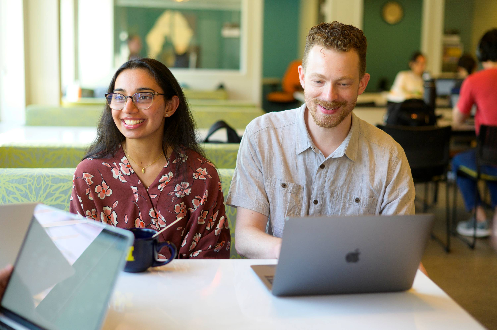
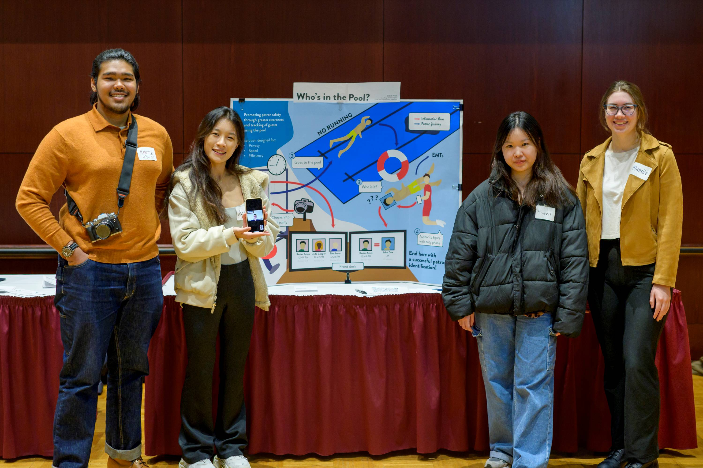

Start Here
Set learning goals, understand the project context, examine your assumptions, define team roles, and establish a strong relationship with your partner.
Prepare for your experienceThe UMSI Engaged Learning Office connects students with opportunities to apply classroom knowledge to real challenges. Use this site to prepare for your experience, manage your work, and reflect on what you learned.
Real-world projects rarely follow a perfect plan. This site helps you find the right guidance when you need it, so you can spend less time earching for materials and more time learning, collaborating, and moving your project forward.
Engaged learning projects can change as new needs, constraints, and insights emerge. Find guidance for the stage of work you are navigating now.

Set learning goals, understand the project context, examine your assumptions, define team roles, and establish a strong relationship with your partner.
Prepare for your experienceManage projects and teams, conduct ethical research, communicate progress, respond to feedback, and work through unexpected challenges.
Find active project resources
Complete a responsible handoff, evaluate your impact, reflect on your growth, and translate your work into resume, portfolio, and interview content.
Plan your next stepsWork with a team on an applied artificial intelligence project for a partner organization.
Use information and data skills to help address challenges identified by community organizations.
Participate in a community-engaged learning experience during the University’s fall break.
Collaborate with communities and nonprofit organizations on information-related projects during spring break.
Develop leadership and project-management skills while supporting engaged learning through a UMSI student organization.
Build intercultural awareness and apply your learning in an international setting.
The Engaged Learning Office works with partners across industries and sectors, from technology companies to grassroots nonprofits and cultural heritage institutions, to provide project-based opportunities for UMSI students.
Its mission is to facilitate transformational engaged learning experiences and enable innovative, sustainable, and mutually beneficial information solutions for local and global communities.